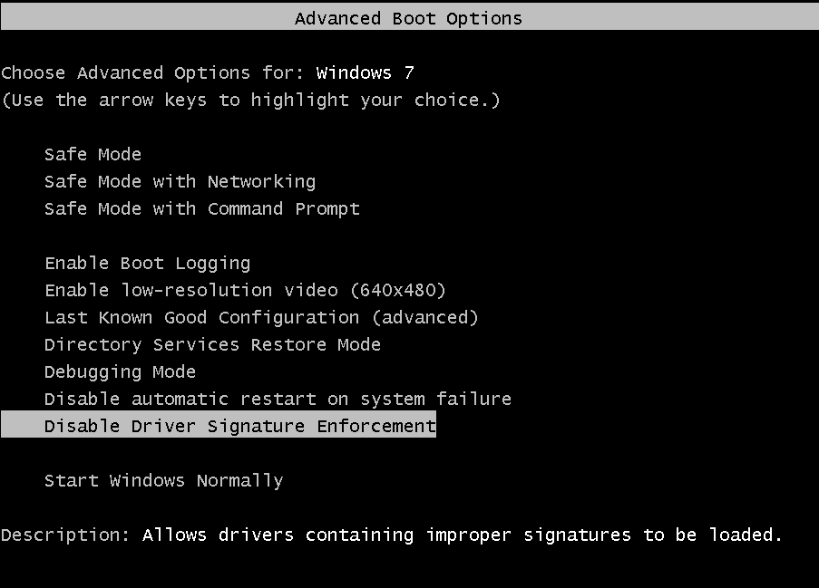

The MAXJoypad Android App replaces your real gamepad controller and allows you to play PC games using the power of your Smartphone or Tablet.
SOLUTIONS FOR WINDOWS 7
Is this error appearing with MAXJoypad on your Windows 7 ?

This error usually happens when your Windows is without some needed updates. We use SHA-256 digital certificate for signing our driver which is safe. This hash algorithm is only supported on Windows 7 updated. Then try one of the following itens to solve:
1 - Download and install the following Windows update and after restart your the computer:
Windows 7 - 64 bits
Windows 7 - 32 bits
2 - Case previous item does not solve. Go to the Windows Control Panel and search for Windows Update.
Press the button "Check for Updates". After press "Install updates". Besides that, check if there was hidden updates. Press Restore hidden updates and mark all system and security updates that appear on the list. Restart your computer after all updates installed.
3 - Case itens 1 and 2 do not solve. Disable the Windows 7 driver signature checking. Reboot as normal and press F8 repeatedly while the boot process is running. A boot menu will appear as the figure, here, select "Disable Driver Signature Enforcement". Remember, this option deactive driver signature checking on Windows only temporarily. Thus, on the next Windows boot the driver signature check is reactivated. For disabling driver checking permanently which is entirely up to you - open a command prompt as an admin and type:
bcdedit -set loadoptions DISABLE_INTEGRITY_CHECKS
and after this:
bcdedit -set TESTSIGNING ON (and restart the computer).

4 - Contact us on the e-mail support@maxjoypad.com .